事实上我们可以讨论UFD及其分式域上的多项式，但下面我们仅限于讨论 和
和 上的多项式。由相关的高等代数学的知识，我们知道对于
上的多项式。由相关的高等代数学的知识，我们知道对于![$\mathbb{Z}[x]$](latex/latex2png-PolyFacZ_27044286_-5.gif) 上的多项式
上的多项式 ，其在
，其在![$\mathbb{Q}[x]$](latex/latex2png-PolyFacZ_27044295_-5.gif) 中的不可约因子分解可对应于在中的不可约因子分解，即若则有于是上任一多项式的因子分解对应于上的因子分解和上本原多项式的因子分解。前者在素数理论中讨论，这里我们只讨论后者。
中的不可约因子分解可对应于在中的不可约因子分解，即若则有于是上任一多项式的因子分解对应于上的因子分解和上本原多项式的因子分解。前者在素数理论中讨论，这里我们只讨论后者。
很自然的，由前面的最大公因子模方法我们可以想到用模方法来求解因子分解问题。首先我们可以利用上一章中的无平方因子分解的方法得到上的无平方因子本原多项式,这时，我们会遇到如下一些问题：
- 素数
 的选取要足够大，以使我们能从得到,这一点我们可由模公因子算法中介绍的Mignotte界理论得到。
的选取要足够大，以使我们能从得到,这一点我们可由模公因子算法中介绍的Mignotte界理论得到。 - 虽然已是无平方因子，但却不一定是无平方因子的。如多项式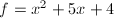无平方因子，但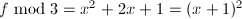.那么在随机选取素数的时候如何使得也是无平方因子呢？这一点在结式理论和后文中回答.
- 当我们在
![$\mathbb{Z}_p[x]$](latex/latex2png-PolyFacZ_71410771_-5.gif) 中将多项式分解后，如何将的分解对应到的分解。最简单的方法是尝试每一种可能的因子组合。因为若有不可约分解
中将多项式分解后，如何将的分解对应到的分解。最简单的方法是尝试每一种可能的因子组合。因为若有不可约分解 ,则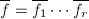,但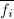不一定不可约。当然，用这种尝试的方法有时效率很低，因此后面还要介绍一种格中短向量(short vectors in lattices)方法。
,则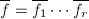,但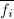不一定不可约。当然，用这种尝试的方法有时效率很低，因此后面还要介绍一种格中短向量(short vectors in lattices)方法。
综上，我们首先要进入中求得因子分解，这一步我们可以利用“大素数”方法和“小素数”方法，只是这里的小素数不再是各不相同的素数，而是素数幂。第二步是由返回中，求得最终结果，可以用尝试因子组合的方法和格中短向量方法.
 大素数模方法和因子组合(Factor Combination)算法
大素数模方法和因子组合(Factor Combination)算法
 上多项式
上多项式由推论1知， 是无平方因子的当且仅当.
是无平方因子的当且仅当.
 .
.
由于,则我们有下面的：
假设有上本原多项式的分解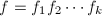,且在模下有： 其中
其中 为
为![$\field{p}[x]$](latex/latex2png-PolyFacZ_223283783_-5.gif) 上首一不可约多项式.若
上首一不可约多项式.若 比Mignotte界小,则有下面的等式：该式原先在上就已成立了.其中指标集
比Mignotte界小,则有下面的等式：该式原先在上就已成立了.其中指标集 为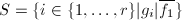.
为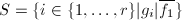.
输入：无平方因子 次本原多项式，其中0$" class="latex-inline" style="vertical-align: -5px" width="65" height="18">且
次本原多项式，其中0$" class="latex-inline" style="vertical-align: -5px" width="65" height="18">且 ,
,
输出：在上的不可约因子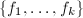.
- 若
 则输出,否则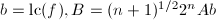,
则输出,否则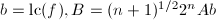, - 随机任取一个奇素数,直至,即满足上面推论条件,
- 利用有限域上因子分解算法求出,其无穷范数均比要小，且在
 上不可约，于是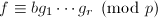,
上不可约，于是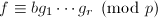, - 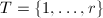,,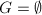,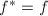,
- 当
 时循环执行下面4步，否则转第10步,
时循环执行下面4步，否则转第10步, - 枚举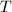的所有
 元子集,并做下两步7、8循环：
元子集,并做下两步7、8循环： - 计算,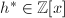使得其无穷范数比要小并且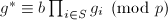,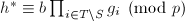,
- 若则
 ,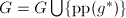,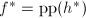,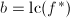,跳出6、7、8循环并转第5步,
,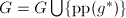,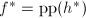,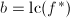,跳出6、7、8循环并转第5步, - 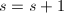,
- 输出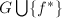.
的因子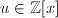,其在中不可约因子个数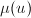.现在我们要归纳证明在每次到第5步时，有下面命题成立：
- 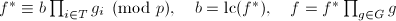,
 中多项式均不可约,
中多项式均不可约,- 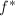本原且它的任何一个不可约因子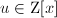有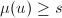.
初始时命题显然成立，假设命题在每次循环进行到第7步前均是成立的，此时经过第7步后当第8步的条件成立时，各量均要发生变化，根据前面的分析则有,于是是 的因子。由于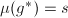且对任何的不可约因子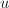有,则是的不可约因子.当有一个不可约因子
的因子。由于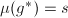且对任何的不可约因子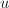有,则是的不可约因子.当有一个不可约因子 满足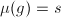时，当循环到s时必然能将此因子选出，这一点可以构造来证明，即取指标集为在中不可约因子的编号.
满足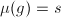时，当循环到s时必然能将此因子选出，这一点可以构造来证明，即取指标集为在中不可约因子的编号.
最后一步是证明在第5步时，若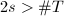\#T$" class="latex-inline" style="vertical-align: -4px" width="64" height="16">，则是不可约的.令是的一个不可约因子且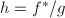非平凡,于是.但是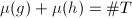，且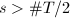\#T/2$" class="latex-inline" style="vertical-align: -5px" width="70" height="18">，则 必为常数，必不可约.
□
必为常数，必不可约.
□
是本原的,且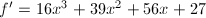,,于是无平方因子.此时 ,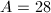,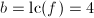,则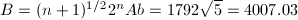,取素数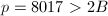2B$" class="latex-inline" style="vertical-align: -4px" width="108" height="16">且,此时可以得到上的分解：
,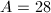,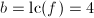,则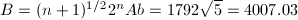,取素数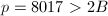2B$" class="latex-inline" style="vertical-align: -4px" width="108" height="16">且,此时可以得到上的分解：
首先,若取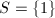,则
 B,$$" class="latex-display" width="580" height="18">
同样的取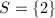时也可验证是不可以的。若取
B,$$" class="latex-display" width="580" height="18">
同样的取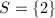时也可验证是不可以的。若取,姝ゆ